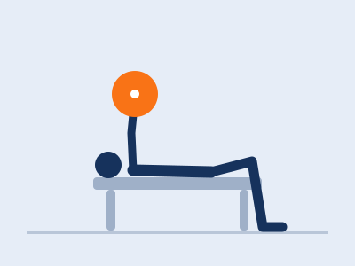
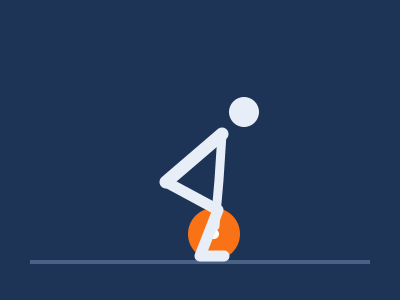
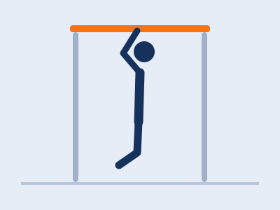
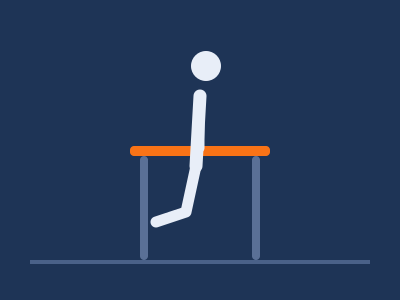
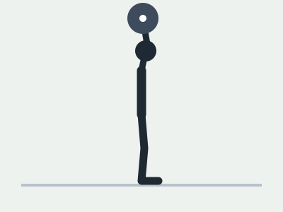
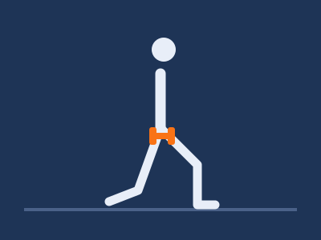
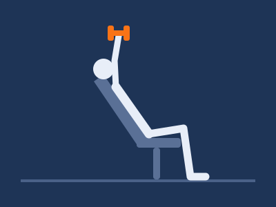
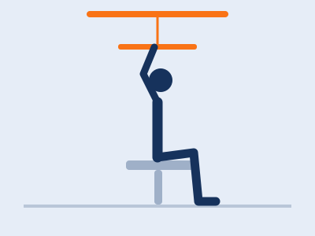
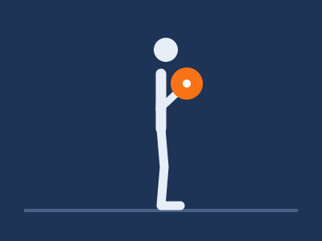

Приседания со штангой
Одно из главных упражнений для ног.
Ноги, штанга
Все упражнения, которые можно добавить в дневник.
Одно из главных упражнений для ног.
Ноги, штанга

Базовое упражнение на грудь.
Грудь, штанга

Подъём штанги с пола.
Спина, штанга

Подтягивание тела к перекладине.
Спина, турник

Упражнение с собственным весом на брусьях.
Грудь, брусья

Жим штанги над головой стоя.
Плечи, штанга

Тяга штанги к поясу в наклоне.
Спина, штанга

Шаг вперёд с приседанием на одной ноге.
Ноги, гантели

Наклон со штангой на почти прямых ногах.
Ноги, штанга

Жим гантелей на скамье под углом 30–45 градусов.
Грудь, гантели

Тяга рукояти к груди в тренажёре.
Спина, тренажёр

Подъём штанги на бицепс стоя.
Руки, штанга

Разгибание рук лёжа, штанга опускается за голову.
Руки, штанга

Статическое упражнение: держать тело ровной линией на предплечьях.
Пресс, без снаряжения

Подъём на носки стоя на степе.
Ноги, гантели